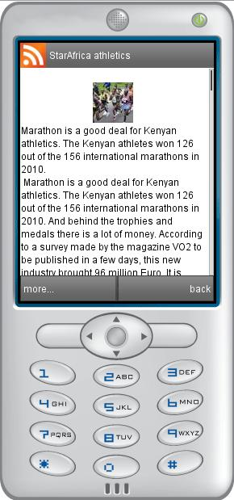

ScrollableText prototype for Tiny Mobile Widget

ScrollableText is composed of:
- two layers to do the scroll
- a title in the page: do not confuse with Title set by manager. Title can take some lines because it is a WrapText element
- an image: under the title, is not mandatory
- the text: under the image, can take some lines because its is a WrapText element
- a scrollbar at right of the page: cursor or the slide
All these graphical elements constitutes the complete ScrollableText.
Scrolling can be activated /disabled using 'enabled' boolean
Data Parameters
- MFString title - Title set at top of the ScrollableText page (do not confuse with Title set by manager)
- MFString content - Title set at end of the ScrollableText page
- MFString image - Image displayed by ScrollableText between title and content
Style parameters
- SFColor textColor - Text color
- SFColor titleColor - Title color
Display parameters
- SFVec2f size - Size of list and scrollableText pages
- SFBool enabled - Enable/Disable user to scroll
- SFBool rtl - Set text display from right to left (arabic)